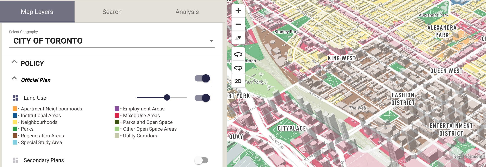
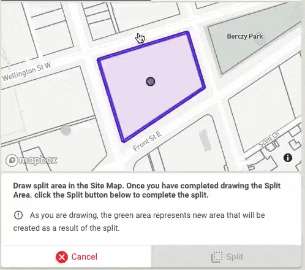
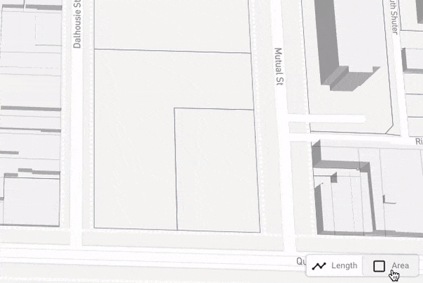

Ratio.City - Year 2
I have been fortunate to be involved from the early days at Ratio.City, helping develop the ideas and concepts from proof of concept all the way to a fully realized commercial product, helping to define a template to be reused as we expand geographically.
Below is a summary of various UI, UX, Datasets and services I was involved in planning, designing, and developing.
Layer List Design
As the platform has expanded geographically, adding significantly more layers, the layer list has had to adapt and keep up, designed with integrated legend per layer and quick access to jump between Geographies. Individually responsible for creating +100 map styles, combining multiple datasets using the Mapbox GL style specification.

Data Processing + Visualization
Produced original map layers combining multiple data layers, generating new insight into different aspects of the built environment. Layers were processed and combined using PostGIS with SQL functions used to create a repeatable process. Calculated properties like parcel coverage and Floor Area Ratio presented interesting opportunities to visualize in the map.
Aerial Imagery
Using Historical (1939 - 2009) and more recent Orthorectified (2011 - 2018) aerial imagery from the City of Toronto Open Data. Allow users to explore Historical and Ortho at the same time to compare and contrast with each other, and other map layers like Development Applications to review site change over time.
Reports
Due to the collaborative nature of the industry and planning process, we recognize the value in being able to easily summarize, export and share work. One way of helping users achieve that was printable reports.
Planning Policy Summary:
Single page report providing instant summary of all policy layers intersecting a site, including two maps of Zoning By-Law Categories and Official Plan Land Use Layers.
Development Potential
Multi-page report providing instant summary of site analysis and built form evaluation, including a customizable view of the 3D Massing Model, list of parcels in land assembly, total site area, GCA, GFA, NSA, density. Additional pages record the assumptions and inputs (setbacks, angular planes) and provides a detailed floor by floor breakdown of areas. D3.js was used to create mini key maps for multi-massing developments.
Development Applications
Multi-page report providing exploratory Spatio-temporal Data Visualisation of development applications at the neighbourhood and ward level, allowing users to explore and compare status of other applications over time around a site of interest.
Shadow Studies
Multi-page report based on Development Potential 3D Massing Model, with built in checks if net new shadows intersect with over 2,000 public green areas within the City of Toronto, a summary map of the shadow spread for all hours, and 8-10 hourly maps (depending on month), displaying hour by hour shadow spread, neighbourhood shadows and net new shadows.
Dynamic Legends
Created for Planning Policy Summary reports in order to reduce the size of the map legends that occupy a printed page. They serve a secondary function to help users understand what is in view as they navigate around a map. The maps are synced using Mapbox GL Sync Move so that both maps and their legends update at the same time.

Multi-Massing + Split
A popular request was the ability to subdivide parcels in order to generate multiple massing. The split tool uses Mapbox GL Draw and Turf.js to help visualize the resulting areas, calculating length of sides and avoiding generating invalid geometry.

Measure Tool
Using Mapbox GL Draw and Turf.js to create a quick access measure tool to allow users to measure custom drawn lines and areas.
